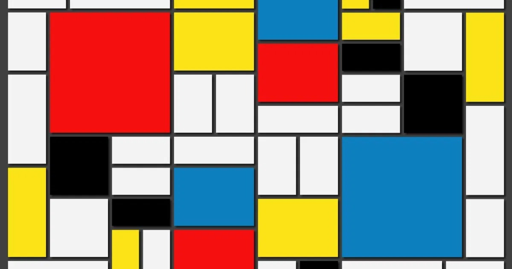

Pincel de Código
Objetivo
Reproduzir ou reinterpretar uma obra geométrica utilizando apenas HTML e CSS. Nenhuma imagem externa é permitida. A composição inteira deve ser construída via código estrutural e propriedades de estilo.

architecture Processo de Construção
A construção da nossa criatura geométrica tridimensional baseou-se inicialmente em uma etapa de profundo aprendizado técnico das ferramentas de estilização web, onde compreendemos como traduzir uma linguagem artística bidimensional para um ambiente interativo. O primeiro passo foi dominar o CSS Grid Layout, que se mostrou a técnica perfeita para reproduzir a estrutura de Piet Mondrian.
Aprendemos a mapear o espaço dividindo-o em colunas e linhas com propriedades de proporção e a utilizar o espaçamento de grade como as famosas linhas pretas estruturais, eliminando a necessidade de margens complexas. Em seguida, avançamos para a manipulação do espaço tridimensional através do entendimento da perspectiva do navegador, configurando uma câmera virtual que simula a distância do olho humano e aplicando uma regra que preserva o formato 3D dos elementos filhos.
Isso nos permitiu dobrar cada face nos eixos vertical e horizontal e afastá-las do centro para fechar a geometria perfeita de um cubo. O maior desafio técnico dessa etapa de aprendizado foi criar uma mecânica de movimento baseada no mouse sem utilizar nenhuma linha de programação lógica ou JavaScript.
Conseguimos superar essa barreira ao criar uma grade invisível de zonas de detecção dentro da própria área interativa. Combinando a detecção de passagem do mouse com seletores que controlam elementos posicionados adiante no código, fomos capazes de disparar as transformações de rotação no cubo e de translação nas pupilas de forma totalmente simultânea e automatizada pelo próprio navegador.
Paralelamente ao aprendizado técnico, o processo criativo exigiu uma engenharia de ideias para conceber algo inovador, interessante e diferente, mas que ainda respeitasse as regras do trabalho e carregasse a forte identidade visual de Composição com Vermelho, Amarelo e Azul, de 1921. A solução encontrada para humanizar a forma geométrica rígida foi a introdução de dois olhos retangulares na face frontal.
Essa adaptação quebrou a frieza do abstracionismo matemático tradicional, criando uma conexão empática e divertida com o espectador, transformando o cubo em um personagem. Mesmo com essa modificação ousada, a essência e o DNA do movimento Neoplasticismo foram rigidamente preservados.
Mantivemos a paleta de cores absoluta contendo apenas o vermelho, o azul e o amarelo puros, acompanhados pelo preto e o branco. Também respeitamos a proibição de linhas curvas ou diagonais, fazendo com que os olhos, as pupilas e todas as divisões do corpo sigam orientações estritamente ortogonais.
Por fim, unimos a técnica e a criatividade para dar uma verdadeira ilusão de vida ao projeto por meio de duas dinâmicas de movimento. A primeira é o olhar interativo, onde o deslocamento coordenado das pupilas pretas dentro das órbitas brancas faz com que a criatura pareça focar a sua atenção e perseguir o cursor do usuário conforme o cubo se inclina. A segunda é uma animação contínua de respiração programada em ciclos infinitos que altera sutilmente a escala do personagem de forma suave e orgânica.